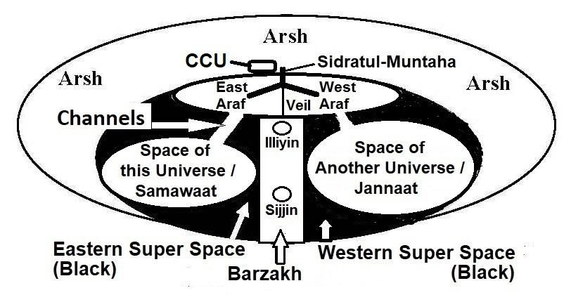

―The worshippers of false gods say: "If God had so willed, we should not have worshipped aught but Him—neither we nor our fathers—nor should we have prescribed prohibitions other than His." So, did those who went before them. But what is the mission of apostles but to preach the Clear Message? For, We assuredly sent among every people an apostle: Worship Allah and avoid Taghut (Power). Then of the people were some whom God guided, and of them were some upon whom the straying was justified. So, travel through the Earth and see, what the end of those who denied was‖ [Al Quran16: 35-36]
- মিথ্যা উপাস্যদের উপাসকরা বলে: "আল্লাহ যদি ইচ্ছা করতেন তবে আমরা তাঁকে ছাড়া অন্য কিছুর ইবাদত করতাম না - আমরা বা আমাদের পিতৃপুরুষদেরও না - এবং তাঁর ছাড়া অন্য কিছু নিষেধ করা উচিত ছিল না।" তাদের আগে যারা গেছে তারাও তাই করেছে। কিন্তু স্পষ্ট বার্তা প্রচার করা ছাড়া প্রেরিতদের উদ্দেশ্য কি? কেননা, আমি অবশ্যই প্রত্যেক জাতির মধ্যে একজন রসূল প্রেরণ করেছি: আল্লাহর ইবাদত কর এবং তাগুতকে পরিহার কর। অতঃপর মানুষের মধ্যে কেউ কেউ ছিল যাদেরকে আল্লাহ হেদায়েত দান করেছিলেন এবং তাদের মধ্যে কেউ কেউ ছিল যাদের উপর পথভ্রষ্টতা জায়েজ হয়েছিল। সুতরাং, পৃথিবীতে ভ্রমণ করুন এবং দেখুন, যারা অস্বীকার করেছে তাদের পরিণাম কি হয়েছে” [আল কুরআন 16: 35-36]
The above verses mention the case where fate can be changed; in fact, Allah prefers to change it. Perhaps a person was an unbeliever in the virtual life, but on Earth, if he shows a mental inclination towards the True Faith and genuinely desires to become a believer, he is transferred into an alternative fate as a believer. According to Hadith, when a person dies, an angel shows him two final destinations. If the person is destined to go to Jannaat, the angel shows him hell and says, 'That is the place that was determined for you, but because you have done well, you will go to Jannaat.' Conversely, if the person is destined to go to hell, the angel shows him Jannaat before revealing his final fate. A human does not have freedom of action, but he does have freedom of thought. Faith is a matter of thought, so he can change his faith. A person may be living as an unbeliever and heading towards hell. But as soon as he believes in one God and the Last Day, Allah, if He wills, opens an alternative fate for him, which leads to Jannaat. Allah is Just and Merciful. The repentance too is a matter of thought. If a person is destined to do a sin, he will do it. But, if he repents, his sin is forgiven. On the Day of Final Judgment, each person will be shown their complete life history, where they will understand how many times they were called to the Truth through messengers, preachers, situations, and signs. The history of Islam is written in blood to keep this call alive. In the above verses, we find a part: ―…some whom God guided, and of them were some upon whom the straying was justified.‖ Here, ―some God guided‖ does not mean that the path to accepting the True Faith was closed for others; they were given equal opportunities but did not come forth—thus, their straying was justified. Why were some guided by Allah while others were not? Perhaps those who were guided had a tendency to accept the True Faith. Maybe they became soft-hearted toward the Prophet (pbuh) or the True Faith. Perhaps they were considering accepting the True Faith one day, but were not very serious about it. If Allah had not guided them, they would have remained in the Wrong Faith, and the prediction would have come true—their straying would have been justified. But Allah guided them because He is Merciful. Others were equally called. They had equal opportunities to accept the True Faith. But nothing could soften their hearts. They kept on hating the True Faith and the Prophets of God. Many Prophets were killed. They gave no scope to guide them. So, the predictions about them were confirmed through their lives on the Earth. Others were equally called and had the same opportunities to accept the True Faith. But, nothing could soften their hearts. They continued to hate the True Faith and the Prophets of God. Many Prophets were killed. They left no room for guidance. Thus, the predictions about them were fulfilled through their lives on Earth. Allah deemed it unjust to judge someone based on their Virtual Life alone. Therefore, humans are placed on Earth to determine their eternal destinations—Earth is merely a testing ground.
উপরোক্ত আয়াতে ভাগ্য পরিবর্তন করা যায় এমন ঘটনা উল্লেখ করা হয়েছে; প্রকৃতপক্ষে, আল্লাহ তা পরিবর্তন করতে পছন্দ করেন। সম্ভবত একজন ব্যক্তি ভার্চুয়াল জীবনে অবিশ্বাসী ছিলেন, কিন্তু পৃথিবীতে, যদি তিনি সত্যিকারের বিশ্বাসের প্রতি মানসিক প্রবণতা দেখান এবং সত্যিকার অর্থে বিশ্বাসী হতে চান, তবে তিনি বিশ্বাসী হিসাবে একটি বিকল্প ভাগ্যে স্থানান্তরিত হন। হাদিস অনুসারে, যখন কোনো ব্যক্তি মারা যায়, একজন ফেরেশতা তাকে দুটি চূড়ান্ত গন্তব্য দেখায়। যদি সেই ব্যক্তির জান্নাতে যাওয়ার নিয়ত হয়, ফেরেশতা তাকে জাহান্নাম দেখিয়ে বলে, 'সেই জায়গাটি তোমার জন্য নির্ধারিত ছিল, কিন্তু তুমি ভালো করেছ বলে তুমি জান্নাতে যাবে।' বিপরীতভাবে, যদি ব্যক্তির জাহান্নামে যাওয়ার ভাগ্য থাকে, তবে তার চূড়ান্ত ভাগ্য প্রকাশের আগে ফেরেশতা তাকে জান্নাত দেখায়। একজন মানুষের কর্মের স্বাধীনতা নেই, তবে তার চিন্তার স্বাধীনতা আছে। বিশ্বাস একটি চিন্তার বিষয়, তাই সে তার বিশ্বাস পরিবর্তন করতে পারে। একজন ব্যক্তি অবিশ্বাসী হয়ে জীবনযাপন করছে এবং জাহান্নামের দিকে যাচ্ছে। কিন্তু যখনই সে এক আল্লাহ ও শেষ দিনে বিশ্বাস করে, আল্লাহ চাইলে তার জন্য একটি বিকল্প ভাগ্য খুলে দেন, যা জান্নাতের দিকে নিয়ে যায়। আল্লাহ ন্যায়পরায়ণ ও করুণাময়। অনুতাপও চিন্তার বিষয়। যদি কোন ব্যক্তির ভাগ্যে পাপ করা হয়, তবে সে তা করবে। কিন্তু, যদি সে তওবা করে তবে তার গুনাহ মাফ হয়ে যায়। চূড়ান্ত বিচারের দিনে, প্রতিটি ব্যক্তিকে তাদের সম্পূর্ণ জীবন ইতিহাস দেখানো হবে, যেখানে তারা বুঝতে পারবে যে কতবার তাদেরকে বার্তাবাহক, প্রচারক, পরিস্থিতি এবং লক্ষণের মাধ্যমে সত্যের দিকে আহ্বান করা হয়েছিল। এই দাওয়াতকে বাঁচিয়ে রাখতে রক্তে লেখা আছে ইসলামের ইতিহাস। উপরোক্ত আয়াতগুলোতে আমরা একটি অংশ পাই: “…কিছু যাদেরকে ঈশ্বর পথপ্রদর্শন করেছিলেন, এবং তাদের মধ্যে কিছু ছিল যাদের উপর পথভ্রষ্টতা ন্যায়সঙ্গত ছিল।” এখানে, “কিছু ঈশ্বর নির্দেশিত” এর অর্থ এই নয় যে সত্য বিশ্বাস গ্রহণের পথ অন্যদের জন্য বন্ধ ছিল; তাদের সমান সুযোগ দেওয়া হয়েছিল কিন্তু সামনে আসেনি—এভাবে, তাদের বিপথগামী হওয়া ন্যায়সঙ্গত ছিল। কেন কেউ কেউ আল্লাহর নির্দেশিত ছিল যখন অন্যরা ছিল না? সম্ভবত যারা সৎপথে পরিচালিত হয়েছিল তাদের সত্য বিশ্বাস গ্রহণ করার প্রবণতা ছিল। হতে পারে তারা নবী (সাঃ) বা সত্য বিশ্বাসের প্রতি কোমল হৃদয় হয়ে উঠেছিল। সম্ভবত তারা একদিন সত্যিকারের বিশ্বাসকে গ্রহণ করার কথা ভাবছিল, কিন্তু এটা নিয়ে খুব একটা সিরিয়াস ছিল না। যদি আল্লাহ তাদের হেদায়েত না দিতেন, তাহলে তারা ভুল বিশ্বাসে থেকে যেত এবং ভবিষ্যদ্বাণীটি সত্য হয়ে যেত-তাদের পথভ্রষ্টতা ন্যায়সঙ্গত হয়ে যেত। কিন্তু আল্লাহ তাদের হেদায়েত করেছেন কারণ তিনি দয়ালু। অন্যদেরও একইভাবে ডাকা হতো। তাদের সত্য বিশ্বাস গ্রহণ করার সমান সুযোগ ছিল। কিন্তু কিছুই তাদের হৃদয়কে নরম করতে পারেনি। তারা সত্য বিশ্বাস এবং আল্লাহর নবীদেরকে ঘৃণা করতে থাকে। বহু নবীকে হত্যা করা হয়েছে। তারা তাদের পথ দেখানোর সুযোগ দেয়নি। সুতরাং, তাদের সম্পর্কে ভবিষ্যদ্বাণী পৃথিবীতে তাদের জীবনের মাধ্যমে নিশ্চিত করা হয়েছিল। অন্যদের সমানভাবে বলা হয়েছিল এবং সত্য বিশ্বাস গ্রহণ করার একই সুযোগ ছিল। কিন্তু, কিছুই তাদের হৃদয়কে নরম করতে পারেনি। তারা সত্য বিশ্বাস এবং আল্লাহর নবীদেরকে ঘৃণা করতে থাকে। বহু নবীকে হত্যা করা হয়েছে। তারা হেদায়েতের জন্য কোন জায়গা ছেড়ে দেয়নি। এইভাবে, তাদের সম্পর্কে ভবিষ্যদ্বাণীগুলি পৃথিবীতে তাদের জীবনের মাধ্যমে পূর্ণ হয়েছিল। আল্লাহ কাউকে তাদের ভার্চুয়াল জীবনের উপর ভিত্তি করে বিচার করা অন্যায় বলে মনে করেছেন। অতএব, মানুষকে তাদের অনন্ত গন্তব্য নির্ধারণের জন্য পৃথিবীতে স্থাপন করা হয়েছে—পৃথিবী নিছক একটি পরীক্ষার স্থল।
3b. A Deciding Factor
3 খ. একটি সিদ্ধান্তকারী ফ্যাক্টর
A human is a vicegerent of God by birth. But, on the Earth, he is under test. Now, he has no divine power. But, he will be powerful in the Jannaat. His verbal orders will be materialized instantly. The sinners will be deputed in the galaxies of this universe (Samawaat). They will have no divine power. They endure punishment due to the inherent nature of the Samawaat. Mainly one‘s nature drives one to Jannaat or Hell.
একজন মানুষ জন্মগতভাবে ঈশ্বরের উপাস্য। কিন্তু, পৃথিবীতে, তার পরীক্ষা চলছে। এখন তার কোনো ঐশ্বরিক ক্ষমতা নেই। তবে, তিনি জান্নাতে শক্তিশালী হবেন। তার মৌখিক আদেশ অবিলম্বে বাস্তবায়িত হবে. পাপীদের নিযুক্ত করা হবে এই মহাবিশ্বের গ্যালাক্সিতে (সামাওয়াত)। তাদের কোন ঐশ্বরিক ক্ষমতা থাকবে না। সামাওয়াতের সহজাত প্রকৃতির কারণে তারা শাস্তি সহ্য করে। মূলত একজনের স্বভাবই তাকে জান্নাত বা জাহান্নামের দিকে নিয়ে যায়।
"Jannaat and hell argued with each other. Hell said, ‗arrogant and tyrant people are given to me.‘ Jannaat said, ‗What happened to me that other than the weak, innocent and careless people nobody has entered inside me?‘ Allah said to Jannaat, ‗You are my mercy; with you I award mercy to anyone I like‘. He said to the hell, ‗Among my servants I punish anyone I wish, with you. You are my wrath. Both of you will be filled up with them.‘ About hell, it will not be filled-up unless Allah puts His leg into it. Then it will say, ‗enough, enough, enough.‘ Then it will be filled up and its one part will come to another part. Allah will not do injustice to any of His creations. About the Jannaat, of course Allah will fill-up that with His servants." [Bokhari and Muslim]
"জান্নাত ও জাহান্নাম একে অপরের সাথে তর্ক করে। জাহান্নাম বলল, 'অহংকারী ও অত্যাচারী মানুষ আমাকে দেওয়া হয়েছে।' জান্নাত বলল, 'আমার কী হয়েছে যে দুর্বল, নিরপরাধ এবং উদাসীন মানুষ ছাড়া আর কেউ আমার ভিতরে প্রবেশ করেনি?' আল্লাহ জান্নাতকে বললেন, 'তুমি আমার রহমত; যাকে তিনি বললেন, আমি তাকে পুরস্কৃত করব, তাকে আমি পুরস্কৃত করব। আমার বান্দাদের মধ্যে আমি যাকে ইচ্ছা শাস্তি দিই, তুমিই আমার ক্রোধ তাদের দ্বারা পূর্ণ হবে। ‘যতক্ষণ না আল্লাহ তায়ালা বলবেন, ‘অনেক হয়েছে, যথেষ্ট হয়েছে’, তখন তা পূর্ণ হবে এবং তার একটি অংশও আসবে না জান্নাত, অবশ্যই আল্লাহ তা তাঁর বান্দাদের দ্বারা পূরণ করবেন।" [বোখারী ও মুসলিম]
One‘s nature may remain dormant until one gains freedom, power, and security, but it never changes:
একজন ব্যক্তি স্বাধীনতা, ক্ষমতা এবং নিরাপত্তা লাভ না করা পর্যন্ত তার প্রকৃতি সুপ্ত থাকতে পারে, কিন্তু এটি কখনই পরিবর্তিত হয় না:
―Abū Dardāʾ states that once when we were with the Messenger of Allāh (pbuh) and we were discussing that which was to occur (in the future), the Messenger of Allah exclaimed, ‗If you hear that a mountain has moved from its place, believe it; but if you hear that a man‘s nature has changed, don‘t believe it, for he remains true to his inborn disposition.‖ [Musnad Aḥmad 27539].
আবু দারদা বলেন, একবার আমরা যখন রাসূলুল্লাহ (সা) এর সাথে ছিলাম এবং (ভবিষ্যতে যা ঘটতে চলেছে) তা নিয়ে আলোচনা করছিলাম, তখন রাসূলুল্লাহ সাল্লাল্লাহু আলাইহি ওয়াসাল্লাম চিৎকার করে বললেন, ‘যদি তোমরা শুনতে পাও যে একটি পাহাড় তার স্থান থেকে সরে গেছে, তাহলে বিশ্বাস কর; কিন্তু যদি আপনি শুনতে পান যে একজন মানুষের স্বভাব পরিবর্তিত হয়েছে, তাহলে তা বিশ্বাস করবেন না, কারণ সে তার জন্মগত স্বভাবের প্রতি সত্য থাকে।'' [মুসনাদে আহমাদ 27539]।
Allah normally remains neutral because it fulfills the demands of creations—the objects of both the universes (Samawaat and Jannaat) are getting the vicegerents of God.
আল্লাহ সাধারণত নিরপেক্ষ থাকেন কারণ এটি সৃষ্টির চাহিদা পূরণ করে - উভয় মহাবিশ্বের বস্তু (সামাওয়াত এবং জান্নাত) ঈশ্বরের উপাধি পাচ্ছে।
4. Records
4. রেকর্ড
The data of a person are recorded in two places: one is the 'Record of Deeds' (Amal-Nama), and the other is the 'Memory Data,' preserved in a file of the Lawh-Mahfuz. These records are discussed below:
একজন ব্যক্তির তথ্য দুটি জায়গায় লিপিবদ্ধ করা হয়: একটি হল 'আমল-নামা' (আমল-নামা) এবং অন্যটি 'মেমরি ডেটা', যা লওহ-মাহফুজের একটি ফাইলে সংরক্ষিত। এই রেকর্ডগুলি নীচে আলোচনা করা হল:
4a. Amal-Nama (Record of Deeds)
4ক. আমল-নামা (আমলের রেকর্ড)
One‘s good and bad deeds are recorded in Amal-Nama. Two angels are appointed for everyone to write.
আমলনামায় মানুষের ভালো-মন্দ লিপিবদ্ধ হয়। প্রত্যেকের লেখার জন্য দুজন ফেরেশতা নিয়োগ করা হয়েছে।
―Behold, two appointed to learn, one sitting on the right and one on the left‖ [Al Quran 50:17]
"দেখুন, শেখার জন্য নিযুক্ত দুজন, একজন ডানে এবং একজন বাম দিকে" [আল কুরআন 50:17]
After the death of a person, the angels deposit his or her Amal-Nama into Illiyin or Sizzin where it is preserved. The Amal-Nama will be used for the Judgment. However, Amal-Nama is not a complete record of one‘s life. It records the sin and the good deeds only. And many sins are not written. If a person does a good deed or repents after doing a sin, his sin may not be written.
একজন ব্যক্তির মৃত্যুর পর, ফেরেশতারা তার আমল-নামা ইল্লিয়িন বা সিজ্জিনে জমা করে যেখানে এটি সংরক্ষণ করা হয়। বিচারের জন্য আমল-নামা ব্যবহার করা হবে। যাইহোক, অমল-নামা একজনের জীবনের সম্পূর্ণ রেকর্ড নয়। এটি কেবল পাপ এবং ভাল কাজগুলি লিপিবদ্ধ করে। আর অনেক গুনাহ লেখা হয় না। কোনো ব্যক্তি কোনো ভালো কাজ করলে বা কোনো পাপ করার পর অনুতপ্ত হলে তার গুনাহ লেখা হবে না।
4b. Memory Data (Brain Data)
4 খ. মেমরি ডেটা (মস্তিষ্কের ডেটা)
The memory data (brain data) of a person is collected every night when he sleeps. Ultimately, it becomes the complete record of his life. It is stated in the following verse:
একজন ব্যক্তির মেমরি ডেটা (মস্তিষ্কের ডেটা) সংগ্রহ করা হয় প্রতি রাতে যখন সে ঘুমায়। শেষ পর্যন্ত, এটি তার জীবনের সম্পূর্ণ রেকর্ড হয়ে যায়। এটি নিম্নলিখিত আয়াতে বলা হয়েছে:
―It is He who (makes) you die (yatawaffakum) by night and has knowledge of all that you have done by day. By day, does He raise you up again that a term appointed be fulfilled. In the end, unto Him will be your return. Then He will show you the truth of all that you did.‖ [Al Quran 6:60]
-তিনিই তোমাকে রাত্রে মৃত্যু (যাওয়াফ্ফাকুম) করেন এবং দিনের বেলায় যা কিছু করেছেন সে সম্পর্কে তিনি জানেন। দিনের বেলায়, তিনি কি তোমাদেরকে পুনরুত্থিত করবেন যাতে একটি নির্ধারিত মেয়াদ পূর্ণ হয়। শেষ পর্যন্ত, তাঁর কাছেই তোমাদের প্রত্যাবর্তন হবে। অতঃপর তিনি তোমাদের সকলের সত্যতা দেখাবেন যা তোমরা করেছ।'' [আল কুরআন 6:60]
A person is dead when he sleeps, as the verse says, ―It is He who (makes) you die (yatawaffakum) by night…‖ An angel copies and collects the brain data (memory data) while he sleeps. This data is like a video record of the day (from sleep to sleep). The angel then sends the data to the Lawh-Mahfuz, where it is preserved in the file that person. The data will be used to re-install their memory after resurrection.
একজন ব্যক্তি মারা যায় যখন সে ঘুমায়, যেমন আয়াতে বলা হয়েছে, “তিনিই (তিনিই) আপনাকে রাতে মৃত্যু (যাওয়াফ্ফাকুম) করেন...” একজন ফেরেশতা ঘুমানোর সময় মস্তিষ্কের ডেটা (মেমরি ডেটা) কপি করে এবং সংগ্রহ করে। এই ডেটাটি দিনের একটি ভিডিও রেকর্ডের মতো (ঘুম থেকে ঘুম পর্যন্ত)। ফেরেশতা তারপর তথ্যটি লহ-মাহফুজের কাছে পাঠায়, যেখানে এটি সেই ব্যক্তির ফাইলে সংরক্ষিত থাকে। পুনরুত্থানের পরে তাদের মেমরি পুনরায় ইনস্টল করতে ডেটা ব্যবহার করা হবে।
―What! When we die and become dust that is a return far! We already know how much of them the earth takes away; with Us is a Book saving‖ [Al Quran 50: 3-4] The ―book saving‖, mentioned in above verse, is a file of the Lawh-Mahfuz. Each human has one or more files in the Lawh-Mahfuz. His brain-data is preserved a file. The brain data will be used to reinstall their memory after resurrection; it will not be used for Judgment, nor will it be exposed. Allah is the provider of honor and dignity—He protects one's honor. Even on the Day of Judgment, a person will be called by his mother‘s name. Primarily, the Amal-Nama will be used for Judgment. The Amal-Nama records good and sinful deeds only, and many sins are not written. However, for some heinous sinners, the Book, containing memory-data, will be opened:
--কি! আমরা যখন মরে ধূলিকণা হয়ে যাবো সেই তো দূরের কথা! আমরা ইতিমধ্যে জানি যে পৃথিবী তাদের কতটা কেড়ে নেয়; আমাদের কাছে একটি বই সংরক্ষণ রয়েছে” [আল কুরআন 50: 3-4] উপরের আয়াতে উল্লিখিত “বই সংরক্ষণ” হল লহ-মাহফুজের একটি ফাইল। লহ-মাহফুজে প্রত্যেক মানুষের এক বা একাধিক ফাইল থাকে। তার মস্তিষ্কের তথ্য-উপাত্ত সংরক্ষিত আছে একটি ফাইল। মস্তিষ্কের ডেটা পুনরুত্থানের পরে তাদের স্মৃতি পুনরায় ইনস্টল করতে ব্যবহার করা হবে; এটি বিচারের জন্য ব্যবহার করা হবে না, বা এটি প্রকাশ করা হবে না। আল্লাহ সম্মান ও মর্যাদা প্রদানকারী - তিনি একজনের সম্মান রক্ষা করেন। এমনকি কিয়ামতের দিনও একজনকে তার মায়ের নাম ধরে ডাকা হবে। প্রাথমিকভাবে, আমল-নামা বিচারের জন্য ব্যবহার করা হবে। আমল-নামা শুধুমাত্র ভাল এবং পাপ কাজ লিপিবদ্ধ করে, এবং অনেক পাপ লেখা হয় না। যাইহোক, কিছু জঘন্য পাপীদের জন্য, স্মৃতি-উপাত্ত সম্বলিত বইটি খোলা হবে:
―And the Book will be placed; and thou will see the sinful in great terror because of what is therein. They will say, "Ah! Woe to us! What a Book is this! It leaves out nothing small or great but takes account thereof!" They will find all that they did placed before them. And not one will thy Lord treat with injustice.‖ [Al Quran 18:49]
- এবং কিতাব স্থাপন করা হবে; এবং আপনি সেখানে যা আছে তার কারণে পাপীকে বড় আতঙ্কে দেখতে পাবেন। তারা বলবে, হায়! আফসোস! এটা কি কিতাব! এটা ছোট বা বড় কিছুই বাদ দেয় না কিন্তু তার হিসাব নেয়! তারা যা করেছে তা তাদের সামনে রাখা হবে। আর তোমার প্রভু কারো প্রতি অবিচার করবেন না।'' [আল কুরআন 18:49]
Ironically, one‘s own brain, eyes, and ears act like CCTV, recording evidence to be used on the Day of Judgment.
হাস্যকরভাবে, একজনের নিজের মস্তিষ্ক, চোখ এবং কান সিসিটিভির মতো কাজ করে, বিচারের দিনে ব্যবহার করা প্রমাণ রেকর্ড করে।
5. The Cybernetic System of the Universes
5. মহাবিশ্বের সাইবারনেটিক সিস্টেম
The universes are discussed in Chapter 1. The Quran and Hadith convey the following impression of their disposition: FIGURE 6.3: Dispositions of the Universes

চিত্র 6_3 / Figure 6_3
মহাবিশ্বগুলি অধ্যায় 1 এ আলোচনা করা হয়েছে। কুরআন এবং হাদিস তাদের স্বভাব সম্পর্কে নিম্নলিখিত ধারণা প্রদান করে: চিত্র 6.3: মহাবিশ্বের স্বভাব
চিত্র 6_3 / Figure 6_3
Our fates are written in the Disc (Lawh-Mahfuz) of the CCU (Central Computer of the Universes). The CCU monitors the materialization of the fates by angels. There are innumerable angels working throughout the universes. The CCU manages the angels by a huge cybernetic system that covers the universes and the independent domains, like Illiyin and Sijjin. The cybernetic system includes the connecting channels and servers at different stages. The major components of the cybernetic system and their locations are discussed below under the following Headings: a. CCU (Central Computer of the Universes) and the Arsh b. Sidratul-Muntaha c. Araf and Veil d. Main Canals e. Axis of the Universe (Samawaat) f. Command Station g. The Fortress h. Sakinah (Indwelling)
আমাদের ভাগ্য সিসিইউ (মহাবিশ্বের কেন্দ্রীয় কম্পিউটার) ডিস্কে (লাওহ-মাহফুজ) লেখা আছে। সিসিইউ ফেরেশতাদের দ্বারা ভাগ্যের বাস্তবায়ন পর্যবেক্ষণ করে। মহাবিশ্ব জুড়ে অসংখ্য ফেরেশতা কাজ করছে। CCU একটি বিশাল সাইবারনেটিক সিস্টেমের মাধ্যমে ফেরেশতাদের পরিচালনা করে যা মহাবিশ্ব এবং ইলিয়িন এবং সিজ্জিনের মতো স্বাধীন ডোমেনগুলিকে কভার করে। সাইবারনেটিক সিস্টেমে বিভিন্ন পর্যায়ে সংযোগকারী চ্যানেল এবং সার্ভার অন্তর্ভুক্ত থাকে। সাইবারনেটিক সিস্টেমের প্রধান উপাদান এবং তাদের অবস্থানগুলি নীচের শিরোনামের অধীনে আলোচনা করা হয়েছে: ক. সিসিইউ (সেন্ট্রাল কম্পিউটার অফ দ্য ইউনিভার্স) এবং আরশ খ. সিদরাতুল মুনতাহা গ. আরাফ ও পর্দা ঘ. প্রধান খাল ঙ. মহাবিশ্বের অক্ষ (সামাওয়াত) চ. কমান্ড স্টেশন g. দুর্গ জ. সাকিনাহ (অভ্যন্তরীণ)
5a. CCU (Central Computer of the Universes) and the Arsh
5 ক. সিসিইউ (সেন্ট্রাল কম্পিউটার অফ দ্য ইউনিভার্স) এবং আরশ